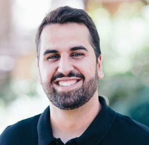
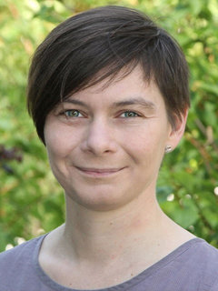

Current Officers
 Section Chair: Gary Rosner
Section Chair: Gary Rosner
Program Chair: Tony Pourmohamad
I am a statistical scientist in the department of biostatistics at Genentech. Prior to joining Genentech, I received my Ph.D. from the department of Statistics and Applied Mathemetics at the University of California, Santa Cruz where my research focused on constrained optimization for computer experiments. Nowadays, I spend most of my time at the intersection of clinical and nonclinical statistics here at Genentech.
Secretary: Manuela Zucknick
I have been an Associate Professor at the Oslo Centre for Biostatistics and Epidemiology at the Faculty of Medicine, University of Oslo (Norway) since 2015. From 2008 until 2014 I worked as a biostatistician at the German Cancer Research Center. My current research interests include the development of methods for predicting drug response and drug-drug synergies in personalised cancer therapy and of Bayesian hierarchical models for the integrative analysis of omics data. I am passionate about promoting the use of better statistical methods in biomedical research, both through teaching & advising and through method development and dissemination.
 Treasurer: Anna Frenni Sterrantino
Treasurer: Anna Frenni Sterrantino
I am a Researcher Associate in Statistics for Environmental Epidemiology at the UK Small Area Health Statistics Unit (SAHSU), part of the MRC-PHE Centre for Environment and Health at Imperial College London. My research focuses on two themes: 1) Applied statistical methods in environmental epidemiological studies; and 2) developing methods for data with spatial and temporal structure. I am interested in Bayesian approaches and Latent Gaussian Markov Random Fields and on the related computational aspects and to methods to improve small area analysis. Besides that, I am involved in extra-academic activities as co-chair of the Researchers’ Society promoting course/seminars and workshops for early career and PhD students.
Past Officers
Section Chair
- Leonard Held (2016-2018)
- Sylvia Richardson (2015-2016)
Program Chair
- Gianluca Baio (2017-2018)
- Telba Z. Irony (2015-2016)
Secretary
- Gianluca Baio (2015-2016)
Treasurer
- Ying Yang (2015-2016)
- © ISBA Section on Biostatistics and Pharmaceutical Statistics